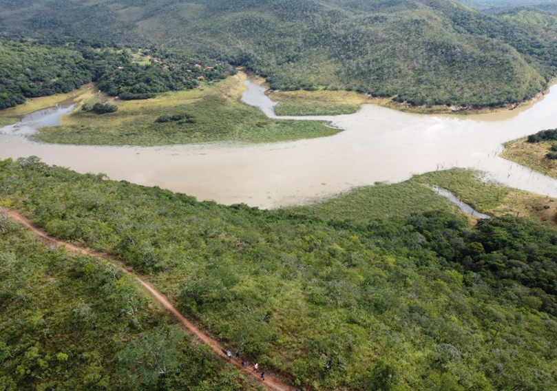
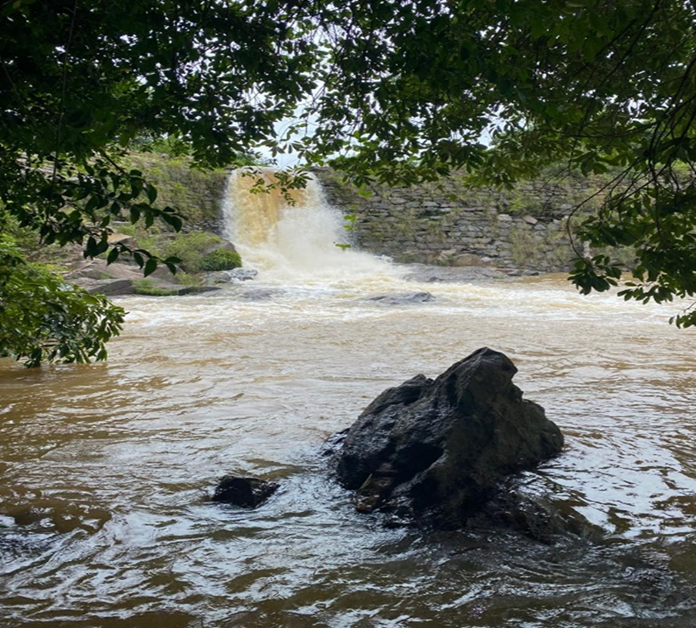
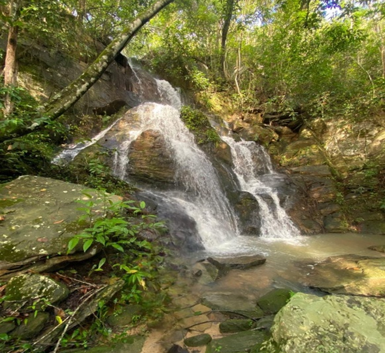
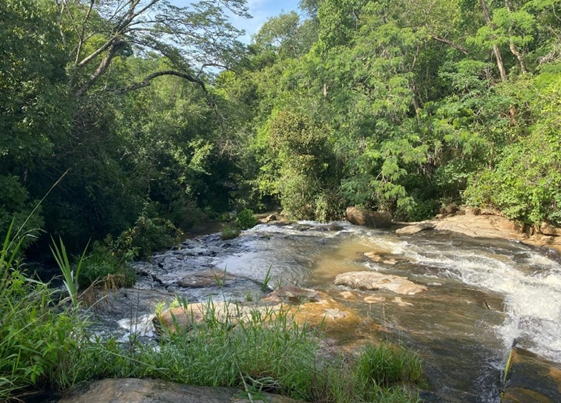

Patrimônio Natural como Instrumento Educativo e Potencial Turístico
Ipameri se destaca pela beleza de suas paisagens naturais, reunindo cachoeiras, mirante e espaços que encantam pela diversidade e riqueza ambiental. Esses locais possuem grande potencial para o lazer, a educação ambiental e o turismo ecopedagógico. Confira, a seguir, imagens desses atrativos, com dados sobre acesso, uso, orientações de visitação e o mapa da vegetação predominante da região, convidando à valorização, à reflexão e à preservação da natureza.

Cachoeira da Casa da Pedra
Encanta pela beleza de suas águas e pela presença de uma construção rústica em pedra que se integra harmoniosamente à paisagem natural, agregando valor histórico e turístico ao local.
Mapa → Saiba mais →
Mirante do Corumbá
A trilha conduz o visitante por paisagens típicas do bioma Cerrado até um ponto de vista privilegiado, onde campos, matas e formações rochosas compõem um cenário encantador.
mapa → Saiba mais →
Antiga Usina Hidrelétrica do Rio do Braço
Marco histórico de Ipameri e da história energética de Goiás. Inaugurada como a primeira usina do estado, hoje desativada, o local preserva valor histórico, cultural e ambiental.
Mapa → Saiba mais →
Cachoeirinha
Atrai visitantes pela beleza cênica de seu percurso e pela presença de uma deslumbrante cachoeira. Formações rochosas, cursos d'água e vegetação do Cerrado compõem um cenário de grande valor ecológico.
Mapa → Saiba mais →
Cachoeira da Ponte Alta
Destaca-se pela harmonia entre os elementos naturais do Cerrado. As águas escorrem sobre formações rochosas e formam poços propícios para banho, em meio à vegetação preservada.
Mapa → Saiba mais →
Cachoeira da Capivara
Permite vivenciar diferentes fitofisionomias, revelando a diversidade ecológica da região. O percurso conduz a pequenos poços naturais, enriquecendo a experiência de contato com a natureza.
Mapa → Saiba mais →
Cachoeira dos Novatos
Tem como principal atrativo sua cachoeira em um cenário de grande beleza natural. O percurso proporciona contato direto com a vegetação típica do Cerrado e sua diversidade de fitofisionomias.
Mapa → Saiba mais →
Cachoeira Berro D'Água
Percurso que permite contato com diferentes tipos de vegetação do Cerrado, com áreas de mata, veredas e formações abertas. Pequenas quedas d'água e poços naturais enriquecem a experiência.
Mapa → Saiba mais →